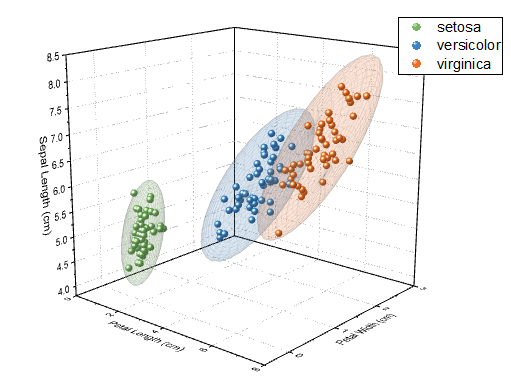
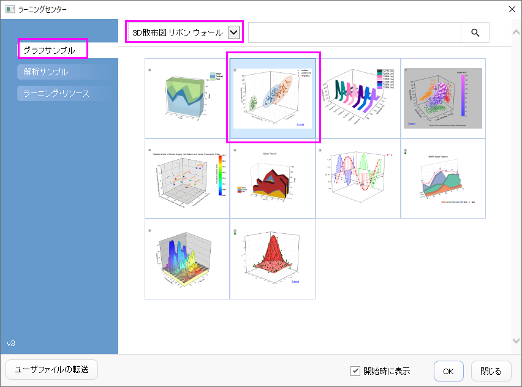
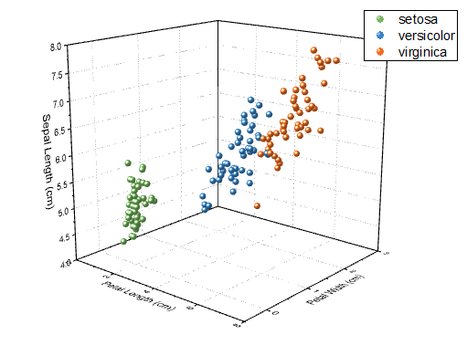
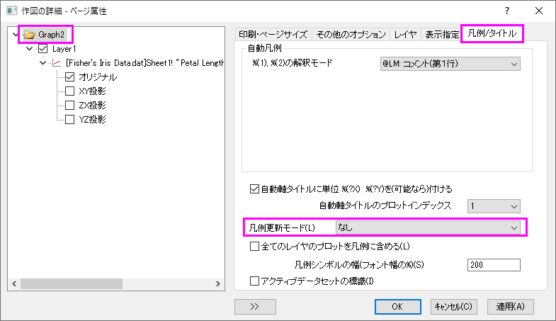
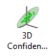
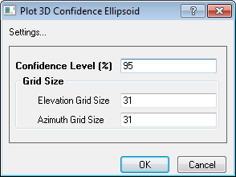

散布図データと透過したパラメトリック曲面グラフ
3D-TransParaSurf-Scatter
サマリー
このチュートリアルは、3D散布図と3Dパラメトリック曲面を組み合わせる方法を紹介します。
- 
必要なOriginのバージョン:Origin 2016 SR0以降
学習する項目
- カラーインデックス付き3D散布図を作成する方法
- アプリを使って3D confidence ellipsoidを作成する方法
ステップ
カラーインデックス付きで3D散布図を作図する
- ヘルプ: ラーニングセンター メニューを選択、または キーボードのF11 キーを押して、ラーニングセンターを開きます。グラフサンプルを選択し、カテゴリーのドロップダウンリストから3D散布図
リボン ウォールを選択します。グラフサンプルをダブルクリックし「3D Scatter Ribbon and Wall Graphs
- 3D Confidence Ellipsoid for 3D Scatter」を開きます。

このチュートリアルはサンプルデータ<Origin EXE Path>\Samples\Statistics\Fisher's
Iris Data.datと関連しています。
- 3番目の列を選択し、作図>3D:3D散布図と選択し、3D散布図を作図します。
- グラフをダブルクリックして作図の詳細ダイアログを開き、左パネルのプロットレベルの下にあるオリジナルを選択します。右のパネルでシンボルタブを選択し、色をポイント毎：インデックス：Col(E)："Species"に設定します。カラーリストを開き、シンボルの色を設定します。
- グラフ凡例を右クリックして、コンテキストメニューから凡例：凡例の再構成を選択します。 以下のように、3D散布図が作成されます。

- 以降の操作で凡例が更新されないようにするには、メニューからフォーマット：作図の詳細（ページ属性）を選択して作図の詳細ダイアログを開きます。凡例更新モード/タイトルタブで、凡例更新モードをなしにします。

透過性を設定したパラメトリック曲面をアクティブグラフに追加する
- OriginLab File Exchange Pageから3D Confidence Ellipsoid アプリをダウンロードします。:
3D Confidence Ellipsoid
- Originのプログラムにアプリをドロップ&ドラッグしてインストールし、アプリギャラリーに3D Confidential
Ellipsoidのアイコンが表示されます。

- グラフをアクティブにして、アプリギャラリーにあるこの3D Confidential Ellipsoidボタンをクリックします。Plot
3D Confidence Ellipsoidダイアログが開きます。初期設定のまま、OKボタンをクリックします。3つの楕円体がグラフに追加され、それぞれ同じ色でデータのグループを覆っています。

最終的に、下図のようなグラフになります。